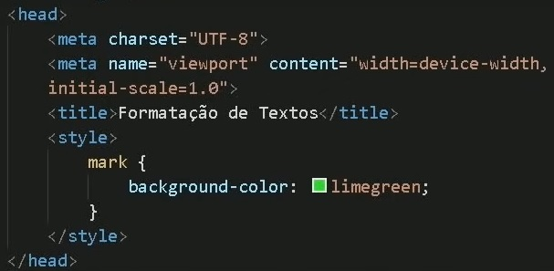

nessa frase o negrito é assim com b, só que a tag b não tem semântica
agora nessa com strong fica assim: negrite, igual né?
agora vamos ver o itálico: control+shift+p e digitar app que significa wrap with abbreviation, o que ele fez foi "envelopar" o i para itálico (?) isso é bem útil quando entendemos pra que serve =3
se eu tentar fazer um parágrafo, dá na mesma... não esquecer de selecionar o que você quer "envelopar". nesse caso é usar a tag EM (semântica), que significa termo em ênfase (que tem significado).
fiz rapidinho, só escrever sem parágrafo mesmo, daí seleciona tudo e depois aperta ctrl+shift+p, enter (porque foi utilizado recentemente) depois digita p, que é para criar o parágrafo, fim.
É DISSO QUE EU GOSTOOOOOO, é feito com a tag mark. vai ficar em amarelo por padrão, mas dá pra mudar em CSS, ah muleke!
usando a tag de css style a gente consegue mudar selecionando o background color. LEMBRANDO que é dentro da tag mark, mas já é css, que doideira né?
tem infinitas cores e formas de colocar, olha só!
e se eu quiser colocar no texto todo essa marca de uma cor diferenciada?
aí precisa configurar o mark em si (tipo no LaTeX), coloca no cabeçalho uma tag style e configura da cor desejada, como na imagem ali:
obs.: dá pra fazer por link externo também!
criar um texto grande e pequeno no mesmo parágrafo
marcando texto como excluído, para ser lido mas não considerado (tipo nas leis?)
marcar como inserido recentemente, ou depois dos anteriores e tal, que aparentemente é a mesma coisa que a tag u de underline
x2+3
H2O